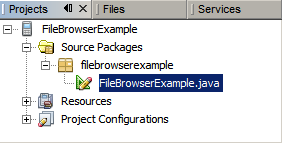
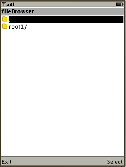
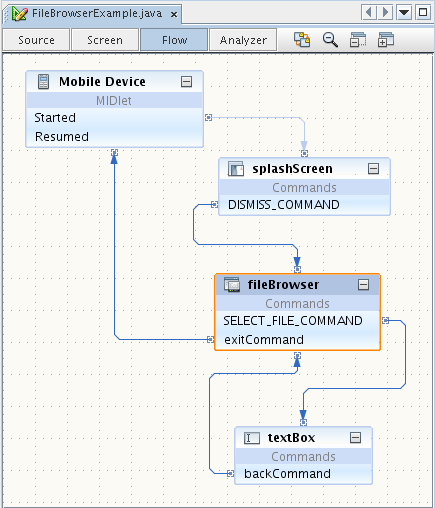

此时将在弹出式窗口中显示该元素的 Javadoc。
 )，以便在浏览器中查看有关 FileBrowser 组件的详细信息。
)，以便在浏览器中查看有关 FileBrowser 组件的详细信息。可视 Mobile 设计器 (Visual Mobile Designer, VMD) 是 NetBeans Mobility 中的图形界面，您可以在该界面中使用拖放式组件设计 Mobile 应用程序。通过 VMD，您可以使用 IDE 提供的组件或您自己设计的组件定义应用程序流和设计 GUI。VMD 包含很多标准用户界面 (User Interface, UI) 组件，您可以使用这些组件创建应用程序，如 "Lists"（列表）、"Alerts"（警报）、"Forms"（表单）、"Images"（图像）。它还包含一些定制组件，用于简化创建较复杂功能的过程，例如 "Wait Screen"（等待屏幕）、"Splash Screens"（闪屏）和 "Table Items"（表项）等。
"File Browser"（文件浏览器）是一个定制组件，提供了使用设备文件系统所需的用户界面。它还提供了基本功能，用以浏览设备存储内存的内容。该组件使用 FileConnection API，它包含在适用于 Java ME 平台的 PDA 可选包的 JSR-75 规范中。JSR-75 不是 MIDP 2.0 规范的一部分，这就是为什么只能在支持 JSR-75 的设备上使用该定制组件的原因。
本教程介绍如何在支持 JSR-75 的设备的 Mobile 应用程序中使用 "File Browser"（文件浏览器）组件。您将了解这些组件的基本功能，如何浏览设备内存存储的内容以及如何显示所选文本文件的内容。除了 "File Browser"（文件浏览器）定制组件以外，我们还使用其他两个 MIDP 组件："Splash Screen"（闪屏）和 "Text Box"（文本框）。
目录

要学习本教程，您需要具备下列软件和资源。
| 软件或资源 | 要求的版本 |
|---|---|
| 带有 Java ME 的 NetBeans Beans | 版本 6.9 或更高版本 |
| Java Development Kit (JDK) | 版本 6 或版本 7 |
开始之前，您可能希望查看本教程的最终结果。
请执行下列步骤以安装 FileBrowserExample 应用程序：


现在，您已看到运行中的 "File Browser"（文件浏览器）组件，接下来让我们从头开始创建此应用程序。要创建该应用程序，请执行以下操作：
FileBrowserExample。将Project Location（项目位置）更改为系统中的某个目录。从现在开始，我们将此目录称为 $PROJECTHOME。
注意：该项目文件夹中包含所有源代码和项目 meta 数据，如项目的 Ant 脚本。应用程序本身显示在可视 Mobile 设计器的 "Flow"（流）设计窗口中。
FileBrowserExample 项目，然后选择 "File"（文件）> "New File"（新建文件）（Ctrl-N 组合键）。在 "Categories"（类别）下，选择 "Java Classes"（Java 类）。在 "File Types"（文件类型）下，选择 "Java Package"（Java 包）。单击 "Next"（下一步）。
filebrowserexample。单击 "Finish"（完成）。
filebrowserexample 包，然后选择 "File"（文件）> "New File"（新建文件）（Ctrl-N 组合键）。在 "Categories"（类别）下，选择 "MIDP"。在 "File Types"（文件类型）下，选择 "Visual MIDlet"。单击 "Next"（下一步）。
FileBrowserExample。单击 "Finish"（完成）。
在 "Flow"（流）设计窗口中，单击 "Mobile Device"（移动设备）上的“起点”并将其拖至 spalshScreen 组件上。采用相同的方法，按照下图所示连接各个组件。

/**
* Read file
*/
private void readFile() {
try {
FileConnection textFile = fileBrowser.getSelectedFile();
getTextBox().setString("");
InputStream fis = textFile.openInputStream();
byte[] b = new byte[1024];
int length = fis.read(b, 0, 1024);
fis.close();
if (length > 0) {
textBox.setString(new String(b, 0, length));
}
} catch (IOException ex) {
ex.printStackTrace();
}
}
在源代码中找到 commandAction 方法：
将 readFile(); 插入到 FileBrowser.SELECT_FILE_COMMAND 的操作前代码部分中（紧靠 if (command == FileBrowser.SELECT_FILE_COMMAND)后面，其中显示 //write pre-action code here）：
按 <F6> 键以运行主项目，或者选择 "Run"（运行）> "Run Main Project"（运行主项目）。
NetBeans IDE 提供了 "File Browser"（文件浏览器）组件以及可在 VMD 中使用的其他组件的 API Javadoc。要阅读 "File Browser"（文件浏览器）组件的 Javadoc，请完成以下步骤：
)，以便在浏览器中查看有关 FileBrowser 组件的详细信息。